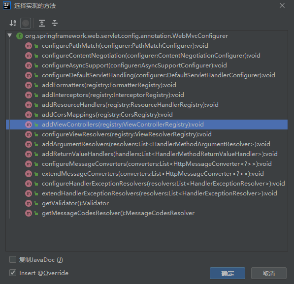

一、官方文档介绍
以下内容引用自官方文档，机翻并进行手动修正，部分内容已省略
1、Spring MVC的自动化配置
Spring Boot为Spring MVC提供了自动配置，它可以很好地与大多数应用程序一起工作。自动配置在Spring默认设置的基础上添加了以下功能：
- 包含
contentnegotingviewresolver和beannameviewsolverbeans - 支持服务静态资源，包括支持Webjars（参考链接）
- 自动注册
Converter，GenericConverter和Formatterbeans - 支持
HttpMessageConverters（参考链接） - 自动注册
MessageCodesResolver（参考链接） - 支持静态的
index.html - 支持自定义
Favicon（参考链接） - 自动使用一个
ConfigurableWebBindingInitializerbean（参考链接）
如果您想保留这些Spring Boot MVC的自定义配置并进行更多的MVC自定义（拦截器、格式化程序、视图控制器和其他功能），可以在自己的类上添加@Configuration注解，（继承）类型为WebMvcConfigurer，但不要添加@EnableWebMvc注解。
如果你想提供RequestMappingHandlerMapping、RequestMappingHandlerAdapter或ExceptionHandlerExceptionResolver的自定义实例，并且仍然保留Spring Boot MVC的自定义配置，则可以声明WebMVCregistration类型的bean，并使用它来提供这些组件的自定义实例。
如果您想完全控制Spring MVC，可以在自己的类上添加@Configuration和@EnableWebMvc注解，或者添加你自己的@Configuration注释DelegatingWebMvcConfiguration配置，如@EnableWebMvc的Javadoc所述。
2、静态内容
默认情况下，Spring Boot从类路径中名为/static（或/public或/resources或/META-INF/resources）的目录或ServletContext的根目录中提供静态内容。它使用来自Spring MVC的ResourceHttpRequestHandler，这样您就可以通过添加自己的WebMvcConfigurer和重写addResourceHandlers方法来修改该行为。
在一个独立的web应用程序中，容器中的默认servlet也被启用，并回调其行为，如果Spring决定不处理它，则从ServletContext的根目录提供内容。大多数情况下，这种情况不会发生（除非修改默认的MVC配置），因为Spring总是可以通过DispatcherServlet处理请求。
默认情况下，资源被映射在/**路径，但是你可以使用spring.mvc.static-path-pattern属性对其进行调整。例如，可以将所有资源重新定位到/resources/**中，如下所示：
1 | =/resources/** |
你还可以使用spring.resources.static-locations属性（用目录位置列表替换默认值）自定义静态资源位置。根Servlet上下文路径“/”也会被自动添加为一个位置。
除了前面提到的“标准”静态资源位置之外，还有一个特殊情况：Webjars content。如果jar文件是以Webjars格式打包的，那么路径为/webjars/**的任何资源都可以从jar文件中获得。
如果应用程序打包为jar，请不要使用src/main/webapp目录。尽管这个目录是一个通用的标准，但它只适用于war包，如果生成jar包，大多数构建工具都会默认忽略它。
3、欢迎页面（首页）
Spring Boot支持静态和模板化的欢迎页面。它首先在配置的静态内容位置中查找index.html文件。如果找不到索引模板，它将查找index模板。如果找到任何一个，它将自动用作应用程序的欢迎页。
4、自定义Favicon（收藏夹图标）
与其他静态资源一样，Spring Boot在配置的静态内容位置中查找favicon.ico。如果存在这样的文件，它将自动用作应用程序的favicon。
5、错误处理
默认情况下，Spring Boot提供了一个/error映射，它以合理的方式处理所有错误，并在servlet容器中将其注册为“全局”错误页。对于计算机客户端，它生成一个JSON响应，其中包含导致错误的详细信息、HTTP状态码和异常消息。对于浏览器客户端，有一个“whitelabel”错误视图，它以HTML格式呈现相同的数据（要自定义它，请添加一个解析到error的View）。要完全替换默认行为，可以实现ErrorController并注册该类型的bean定义，或者添加ErrorAttributes类型的bean以使用现有机制，但替换内容。
BasicErrorController可以用作自定义ErrorController的基类。如果要为新内容类型添加处理程序（默认情况下是专门处理text/html并为其他所有内容提供回调），这一点特别有用。为此，扩展BasicErrorController，添加一个带有produces属性和@RequestMapping注解的公共方法，并创建一个新类型的bean。
5.1 自定义错误页
如果要显示给定状态代码的自定义HTML错误页，可以将文件添加到/error文件夹。错误页可以是静态HTML（即添加到任何static资源文件夹下）或使用模板生成。文件名应为确切的状态代码或序列掩码。
例如，要将404映射到静态HTML文件，文件夹结构如下：
1 | src/ |
如果使用FreeMarker模板映射所有5xx错误，你的文件夹结构会像下面这样：
1 | src/ |
对于更复杂的映射，还可以添加实现ErrorViewResolver接口的bean，如下例所示：
1 | public class MyErrorViewResolver implements ErrorViewResolver { |
您还可以使用常规的Spring MVC特性，比如@ExceptionHandler方法和@ControllerAdvice。然后，ErrorController将会拾取任何未处理的异常。
6、CORS（跨域资源共享）支持
Cross-origin resource sharing（CORS）是大多数浏览器实现的W3C规范，它允许您以灵活的方式指定哪些类型的跨域请求被授权，而不是使用一些不太安全和不太强大的方法，如IFRAME或JSONP。
从（spring）版本4.2开始，SpringMVC支持CORS。在Spring Boot应用程序中使用带有@CrossOrigin注解的控制器方法CORS配置不需要任何特定的配置。全局CORS配置可以通过使用自定义的addCorsMappings(CorsRegistry)方法注册WebMvcConfigurerbean来定义，如下例所示：
1 | (proxyBeanMethods = false) |
二、源码查阅、分析
首先找到关于SpringBoot对SpringMVC进行自动配置的类的全路径：
org.springframework.boot.autoconfigure.web.servlet.WebMvcAutoConfiguration.java
1、类注解
这个类上的注解说明了它具有如下特性：
这是一个不会代理bean方法的spring配置类
满足以下条件时，这个自动配置类才会生效
- 匹配到这是一个基于servlet的web应用程序
- 在类路径中存在
Servlet、DispatcherServlet以及WebMvcConfigurer类 - 不存在使用
WebMvcConfigurationSupport类的bean
自动配置的序号为
Ordered.HIGHEST_PRECEDENCE + 10（HIGHEST_PRECEDENC的值为-2147483648）在
DispatcherServletAutoConfiguration类、TaskExecutionAutoConfiguration类和ValidationAutoConfiguration类之后应用自动配置
2、构造方法
自动配置类没有提供构造方法，而是使用了一个继承WebMvcConfigurer的静态内部类作适配器，原因在注释上已经说明了：
定义为嵌套配置以确保当其不在类路径上时不读取WebMVCConfiguer
所以这里的构造方法是WebMvcAutoConfigurationAdapter的
1 | public WebMvcAutoConfigurationAdapter(ResourceProperties resourceProperties, WebMvcProperties mvcProperties, |
2.1 静态资源
需要关注的属性是resourceProperties，定位到ResourceProperties类，发现如下静态字段：
1 | private static final String[] CLASSPATH_RESOURCE_LOCATIONS = { "classpath:/META-INF/resources/", |
和文档说明一致，表示静态资源从这些路径里查找。然后再定位到addResourceHandlers方法
1 | public void addResourceHandlers(ResourceHandlerRegistry registry) { |
首先，第一个if判断属性spring.resources.add-mappings需要为true，资源处理器才生效，当然这是默认值；第二个if则是文档中说明的webjars了；第三个if判断是否有静态路径参数，定位过去发现默认值是/**，后面的链式调用功能依次是：
- 添加路径处理器（这个路径指链接上的路径，不是静态资源的本地路径）
- 添加资源位置（本地路径，相对于项目文件）
- 设置缓存时效
- 设置缓存控制
2.2 首页
找到下一个静态内部类EnableWebMvcConfiguration，关注如下方法
1 |
|
这里的代码逻辑说明了是以所有的静态资源根路径下去找到的第一个index.html文件作为首页。然后定位到WelcomePageHandlerMapping类，构造方法如下
1 | WelcomePageHandlerMapping(TemplateAvailabilityProviders templateAvailabilityProviders, |
首先在静态资源路径参数里有/**然后转发到index.html文件，否则就去模版引擎里去找有没有映射到index路径的
三、功能扩展
1、如何扩展
要想扩展Spring MVC的功能，就如官方文档所说明的那样，新建一个类，继承WebMvcConfigurer类，并添加@Configuration注解，但不要加@EnableWebMvc注解（后续说明原因）
1 |
|

可以看到能实现的方法还是比较多的，比较重要的方法：
addViewControllers添加视图控制器addInterceptors添加拦截器addResourceHandlers添加资源处理器addCorsMappings添加跨域资源访问映射
2、注意事项
上文说到，扩展功能不能添加@EnableWebMvc注解，那么接下来去源码中分析原因：
1 | (RetentionPolicy.RUNTIME) |
这个注解其实就是导入了DelegatingWebMvcConfiguration类，这个类继承了WebMvcConfigurationSupport类。此时再回过头去看WebMvcAutoConfiguration类的注解，如果存在WebMvcConfigurationSupport类，那么默认的自动配置类就不会生效。所以仅仅扩展功能是不能添加@EnableWebMvc注解的，如果想完全接管默认的自动配置，那就可以使用@EnableWebMvc注解